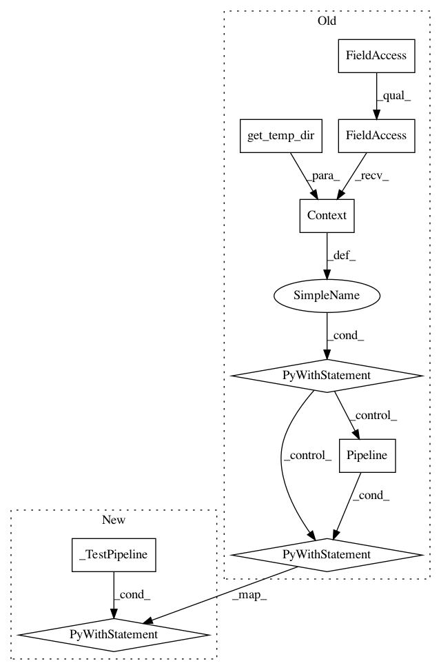

0d078991bf6a056be5579cda14dd1f305078eb7d,tensorflow_transform/beam/cached_impl_test.py,CachedImplTest,test_caching_vocab_for_integer_categorical,#CachedImplTest#,566
Before Change
}, {
"x_vocab": -1,
}]
with beam_impl.Context(temp_dir=self.get_temp_dir()):
with beam.Pipeline() as p:
flat_data = p | "CreateInputData" >> beam.Create(
list(itertools.chain(*input_data_dict.values())))
cache_dict = {
span_0_key: {
b"__v0__VocabularyAccumulate[compute_and_apply_vocabulary/vocabulary]-\x05e\xfe4\x03H.P\xb5\xcb\xd22\xe3\x16\x15\xf8\xf5\xe38\xd9":
p | "CreateB" >> beam.Create(
[b"[-2, 2]", b"[-4, 1]", b"[-1, 1]", b"[4, 1]"]),
},
span_1_key: {},
}
transform_fn, cache_output = (
(flat_data, input_data_dict, cache_dict, input_metadata)
| "Analyze" >>
(beam_impl.AnalyzeDatasetWithCache(preprocessing_fn)))
dot_string = nodes.get_dot_graph(
[analysis_graph_builder._ANALYSIS_GRAPH]).to_string()
self.WriteRenderedDotFile(dot_string)
self.assertNotIn(span_0_key, cache_output)
_ = cache_output | "WriteCache" >> analyzer_cache.WriteAnalysisCacheToFS(
self._cache_dir)
transformed_dataset = (((input_data_dict[span_1_key], input_metadata),
transform_fn)
| "Transform" >> beam_impl.TransformDataset())
transformed_data, _ = transformed_dataset
beam_test_util.assert_that(
transformed_data,
beam_test_util.equal_to(expected_transformed_data),
label="first")
def test_non_frequency_vocabulary_merge(self):
This test compares vocabularies produced with and without cache.
mi_vocab_name = "mutual_information_vocab"
After Change
}, {
"x_vocab": -1,
}]
with _TestPipeline() as p:
flat_data = p | "CreateInputData" >> beam.Create(
list(itertools.chain(*input_data_dict.values())))
cache_dict = {
span_0_key: {
b"__v0__VocabularyAccumulate[compute_and_apply_vocabulary/vocabulary]-\x05e\xfe4\x03H.P\xb5\xcb\xd22\xe3\x16\x15\xf8\xf5\xe38\xd9":
p | "CreateB" >> beam.Create(
[b"[-2, 2]", b"[-4, 1]", b"[-1, 1]", b"[4, 1]"]),
},
span_1_key: {},
}
transform_fn, cache_output = (
(flat_data, input_data_dict, cache_dict, input_metadata)
| "Analyze" >>
(beam_impl.AnalyzeDatasetWithCache(preprocessing_fn)))
dot_string = nodes.get_dot_graph(
[analysis_graph_builder._ANALYSIS_GRAPH]).to_string()
self.WriteRenderedDotFile(dot_string)
self.assertNotIn(span_0_key, cache_output)
_ = cache_output | "WriteCache" >> analyzer_cache.WriteAnalysisCacheToFS(
self._cache_dir)
transformed_dataset = ((
(input_data_dict[span_1_key], input_metadata), transform_fn)
| "Transform" >> beam_impl.TransformDataset())
transformed_data, _ = transformed_dataset
beam_test_util.assert_that(
transformed_data,
beam_test_util.equal_to(expected_transformed_data),
label="first")
// 4 from analysis since 1 span was completely cached, and 4 from transform.
self.assertEqual(_get_counter_value(p.metrics, "num_instances"), 8)
self.assertEqual(_get_counter_value(p.metrics, "cache_entries_decoded"), 1)
self.assertEqual(_get_counter_value(p.metrics, "cache_entries_encoded"), 1)
self.assertEqual(_get_counter_value(p.metrics, "saved_models_created"), 2)
In pattern: SUPERPATTERN
Frequency: 3
Non-data size: 9
Instances
Project Name: tensorflow/transform
Commit Name: 0d078991bf6a056be5579cda14dd1f305078eb7d
Time: 2019-04-29
Author: zoy@google.com
File Name: tensorflow_transform/beam/cached_impl_test.py
Class Name: CachedImplTest
Method Name: test_caching_vocab_for_integer_categorical
Project Name: tensorflow/transform
Commit Name: 0d078991bf6a056be5579cda14dd1f305078eb7d
Time: 2019-04-29
Author: zoy@google.com
File Name: tensorflow_transform/beam/cached_impl_test.py
Class Name: CachedImplTest
Method Name: test_single_phase_mixed_analyzer_run_once
Project Name: tensorflow/transform
Commit Name: 0d078991bf6a056be5579cda14dd1f305078eb7d
Time: 2019-04-29
Author: zoy@google.com
File Name: tensorflow_transform/beam/cached_impl_test.py
Class Name: CachedImplTest
Method Name: test_single_phase_run_twice